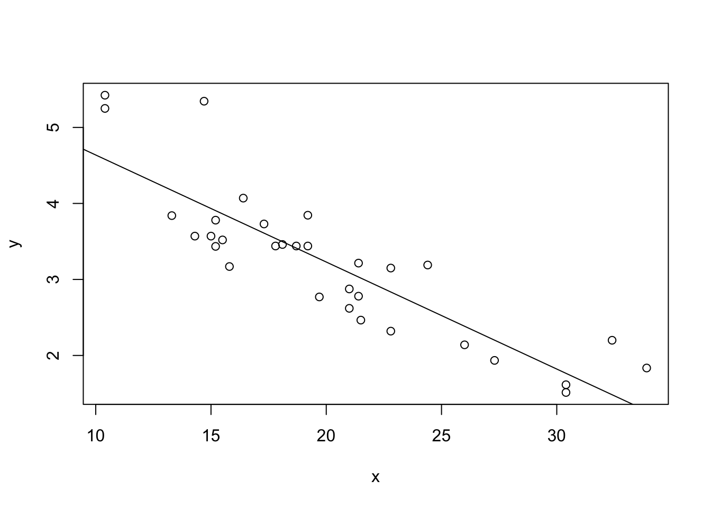

Statistics
Stefano Cacciatore
September 18, 2024
Last updated: 2024-09-18
Checks: 7 0
Knit directory: Tutorials/
This reproducible R Markdown analysis was created with workflowr (version 1.7.1). The Checks tab describes the reproducibility checks that were applied when the results were created. The Past versions tab lists the development history.
Great! Since the R Markdown file has been committed to the Git repository, you know the exact version of the code that produced these results.
Great job! The global environment was empty. Objects defined in the global environment can affect the analysis in your R Markdown file in unknown ways. For reproduciblity it’s best to always run the code in an empty environment.
The command set.seed(20240905) was run prior to running
the code in the R Markdown file. Setting a seed ensures that any results
that rely on randomness, e.g. subsampling or permutations, are
reproducible.
Great job! Recording the operating system, R version, and package versions is critical for reproducibility.
Nice! There were no cached chunks for this analysis, so you can be confident that you successfully produced the results during this run.
Great job! Using relative paths to the files within your workflowr project makes it easier to run your code on other machines.
Great! You are using Git for version control. Tracking code development and connecting the code version to the results is critical for reproducibility.
The results in this page were generated with repository version cbb2736. See the Past versions tab to see a history of the changes made to the R Markdown and HTML files.
Note that you need to be careful to ensure that all relevant files for
the analysis have been committed to Git prior to generating the results
(you can use wflow_publish or
wflow_git_commit). workflowr only checks the R Markdown
file, but you know if there are other scripts or data files that it
depends on. Below is the status of the Git repository when the results
were generated:
Ignored files:
Ignored: .DS_Store
Ignored: data/.DS_Store
Unstaged changes:
Deleted: data/COADREAD.clin.merged.picked.txt
Deleted: data/COADREAD.rnaseqv2__illuminahiseq_rnaseqv2__unc_edu__Level_3__RSEM_genes_normalized__data.data.txt
Note that any generated files, e.g. HTML, png, CSS, etc., are not included in this status report because it is ok for generated content to have uncommitted changes.
These are the previous versions of the repository in which changes were
made to the R Markdown (analysis/Statistics.Rmd) and HTML
(docs/Statistics.html) files. If you’ve configured a remote
Git repository (see ?wflow_git_remote), click on the
hyperlinks in the table below to view the files as they were in that
past version.
| File | Version | Author | Date | Message |
|---|---|---|---|---|
| html | 83f8d4e | tkcaccia | 2024-09-16 | Build site. |
| html | 159190a | tkcaccia | 2024-09-16 | Build site. |
| Rmd | dff6a04 | tkcaccia | 2024-09-16 | Start my new project |
| html | 6d23cdb | tkcaccia | 2024-09-16 | Build site. |
| Rmd | 8b0b07a | tkcaccia | 2024-09-16 | Start my new project |
| html | 6301d0a | tkcaccia | 2024-09-16 | Build site. |
| Rmd | 0119c71 | tkcaccia | 2024-09-16 | Start my new project |
| html | 897778a | tkcaccia | 2024-09-16 | Build site. |
| html | 1a34734 | tkcaccia | 2024-09-16 | Build site. |
| html | 5033c12 | tkcaccia | 2024-09-16 | Build site. |
| Rmd | e9cf751 | tkcaccia | 2024-09-16 | Start my new project |
Univariate Analysis
What is univariate analysis ?
The idea of univariate analysis is to first understand the variables individually. It is typically the first step in understanding a data set. A variable in UA is a condition or subset that your data falls into. You can think of it as a “category” such as “age”, “weight” or “length”. However, UA does not look at > than 1 variable at a time (this would be a bivariate analysis)
Learning Objectives:
Summarising Data
Frequency Tables
Univariate Hypothesis Testing
Visualising Univariate Data
Correlation
Simple Regression analysis
# Installation of packages (usually needed)
# install.packages("ggplot2")
# install.packages("dplyr")
# install.packages("ggpubr")
# install.packages("corrplot")
# Loading of packages
library(ggplot2)
library(dplyr)
library(ggpubr)
library(corrplot)
library(stats)1. Summarising Data
# Using the data set stored in Rstudio called "cars"
# We need to create an array of our single variable for UA:
x <- cars$speedLooking at the CENTRAL TENDENCY of the data:
mean(x)[1] 15.4median(x)[1] 15mode(x)[1] "numeric"Looking at the DISPERSION of the data:
min(x)[1] 4max(x)[1] 25# Range of the data:
range(x)[1] 4 25# Inter-quantile range:
IQR(x)[1] 7# Variance -->
var(x)[1] 27.95918# Standard Deviation:
sd(x)[1] 5.287644TIP: you can use the function
summary to produce result summaries of the results of
various model fitting functions.
summary(x) Min. 1st Qu. Median Mean 3rd Qu. Max.
4.0 12.0 15.0 15.4 19.0 25.0 2. Frequency Tables:
The frequency of an observation tells you the number of times the observation occurs in the data.
A frequency table is a collection of these observations and their frequencies.
A frequency table can be shown either graphically (bar chart/histogram) or as a frequency distribution table.
These tables can show qualitative (categorical) or quantitative (numeric) variables.
Example Data
We will use a data frame with a categorical variable and a numerical variable to demonstrate each type of table.
# Create example data
set.seed(123) # For reproducibility
data <- data.frame(
category = sample(c("A", "B", "C", "D"), 100, replace = TRUE),
value = rnorm(100, mean = 50, sd = 10)
)
head(data) category value
1 C 52.53319
2 C 49.71453
3 C 49.57130
4 B 63.68602
5 C 47.74229
6 B 65.16471# Frequency table for the categorical variable
freq_table <- table(data$category)
freq_table
A B C D
28 26 29 17 Note: the frequency table is CASE-SENSITIVE so the frequencies of the variables corresponds to how many times that specific number of string appears.
Grouped Tables:
Grouped tables aggregate the data into groups or bins.
# 1st Step: Create BINS for the numerical data
bins <- cut(x, breaks = 5)
freq_table_numeric <- table(bins)
freq_table_numericbins
(3.98,8.2] (8.2,12.4] (12.4,16.6] (16.6,20.8] (20.8,25]
5 10 13 15 7 # Group data into bins and create a grouped table:
grouped_table <- table(cut(x, breaks = 5))
grouped_table
(3.98,8.2] (8.2,12.4] (12.4,16.6] (16.6,20.8] (20.8,25]
5 10 13 15 7 Percentage (Proportion) Tables
Percentage tables show the proportion of each unique value or group in the data.
# Percentage table for the categorical variable
percentage_table <- prop.table(table(x)) * 100
percentage_tablex
4 7 8 9 10 11 12 13 14 15 16 17 18 19 20 22 23 24 25
4 4 2 2 6 4 8 8 8 6 4 6 8 6 10 2 2 8 2 # Percentage table for the grouped numerical data
percentage_table_numeric <- prop.table(table(cut(x, breaks = 5))) * 100
percentage_table_numeric
(3.98,8.2] (8.2,12.4] (12.4,16.6] (16.6,20.8] (20.8,25]
10 20 26 30 14 Cumulative Proportion Tables
Cumulative proportion tables show the cumulative proportion of each unique value or group.
# Cumulative proportion table for the categorical variable
cumulative_prop <- cumsum(prop.table(table(data$category)))
cumulative_prop <- cumulative_prop * 100
cumulative_prop A B C D
28 54 83 100 # Cumulative proportion table for the grouped numerical data
cumulative_prop_numeric <- cumsum(prop.table(table(cut(x, breaks = 5))))
cumulative_prop_numeric <- cumulative_prop_numeric * 100
cumulative_prop_numeric (3.98,8.2] (8.2,12.4] (12.4,16.6] (16.6,20.8] (20.8,25]
10 30 56 86 100 Question 1:
Using the cars datset:
Calculate the mean, median, and standard deviation of variable “speed”.
Interpret what these statistics tell you about the speed data.
Compute the range and interquartile range (IQR) of speed.
What do these measures reveal about the dispersion of the speed data?
Use the summary function to get a summary of x.
Describe the central tendency and dispersion metrics provided by the summary output.
Question 2:
Using the below:
xy <- data.frame(
category = sample(c("A", "B", "C", "D"), 100, replace = TRUE)
)
head(xy) category
1 B
2 B
3 A
4 B
5 A
6 ACreate a frequency table for the category variable.
What is the frequency of each category?
Using the below:
data <- data.frame(
value = rnorm(100, mean = 50, sd = 10)
)Create a frequency table for the value variable.
How many observations fall into each unique value?
Using the below:
x <- data$value
bins <- cut(x, breaks = 5)Create a grouped frequency table for the value variable using 5 bins.
What are the frequencies for each bin?
Using the below:
x <- data$value
bins <- cut(x, breaks = 5)Create a percentage (proportion) table for the grouped value data.
What percentage of the observations fall into each bin?
Answers:
# Question 1:
# a. Calculate the mean, median, and standard deviation of variable "speed"
mean_speed <- mean(x)
median_speed <- median(x)
sd_speed <- sd(x)
# c. Compute the range and interquartile range (IQR) of speed
range_speed <- range(x)
iqr_speed <- IQR(x)
# e. Use the summary function to get a summary of x
summary_speed <- summary(x)
# Question 2:
# a. Create a frequency table for the category variable
freq_table_category <- table(xy$category)
# c. Create a frequency table for the value variable
freq_table_value <- table(data$value)
# e. Create a grouped frequency table for the value variable using 5 bins
grouped_table <- table(bins)
# g. Create a percentage (proportion) table for the grouped value data
percentage_table <- prop.table(grouped_table) * 1003. Univariate Hypothesis Testing:
Often, the data you are dealing with is a subset (sample) of the complete data (population). Thus, the common question here is:
- Can the findings of the sample be extrapolated to the population? i.e., Is the sample representative of the population, or has the population changed?
Such questions are answered using specific hypothesis tests designed to deal with such univariate data-based problems.
Example Dataframe:
set.seed(42) # For reproducibility
# Generate numerical data
sample_data_large <- rnorm(50, mean = 100, sd = 15) # Sample size > 30
sample_data_small <- rnorm(20, mean = 100, sd = 15) # Sample size < 30
# Known population parameters
population_mean <- 100
population_sd <- 15
# Generate categorical data
category_data <- sample(c("A", "B", "C"), 100, replace = TRUE)
ordinal_data <- sample(c("Low", "Medium", "High"), 100, replace = TRUE)- Z Test: Used for numerical (quantitative) data where the sample size is greater than 30 and the population’s standard deviation is known.
# Z Test: Test if sample mean is significantly different from population mean
library(stats)
# Perform Z Test
z_score <- (mean(sample_data_large) - population_mean) / (population_sd / sqrt(length(sample_data_large)))
z_score[1] -0.2522376p_value_z <- 2 * pnorm(-abs(z_score)) # Two-tailed test
p_value_z[1] 0.8008574Interpretation: If the p-value is less than the significance level (commonly 0.05), the sample mean is significantly different from the population mean.
- One-Sample t-Test: Used for numerical (quantitative) data where the sample size is less than 30 or the population’s standard deviation is unknown.
# One-Sample t-Test: Test if sample mean is significantly different from population mean
t_test_result <- t.test(sample_data_small, mu = population_mean)
t_test_result
One Sample t-test
data: sample_data_small
t = 1.2497, df = 19, p-value = 0.2266
alternative hypothesis: true mean is not equal to 100
95 percent confidence interval:
97.17831 111.18375
sample estimates:
mean of x
104.181 Interpretation: The t-test result provides a p-value and confidence interval for the sample mean. A p-value less than 0.05 indicates a significant difference from the population mean.
- Chi-Square Test: Used with ordinal categorical data
# Chi-Square Test: Test the distribution of categorical data
observed_counts <- table(category_data)
expected_counts <- rep(length(category_data) / length(observed_counts), length(observed_counts))
chi_square_result <- chisq.test(observed_counts, p = expected_counts / sum(expected_counts))
chi_square_result
Chi-squared test for given probabilities
data: observed_counts
X-squared = 2.18, df = 2, p-value = 0.3362Interpretation: The Chi-Square test assesses whether the observed frequencies differ from the expected frequencies. A p-value less than 0.05 suggests a significant difference.
- Kolmogorov-Smirnov Test: Used with nominal categorical data
# Kolmogorov-Smirnov Test: Compare sample distribution to a normal distribution
ks_test_result <- ks.test(sample_data_large, "pnorm", mean = population_mean, sd = population_sd)
ks_test_result
Exact one-sample Kolmogorov-Smirnov test
data: sample_data_large
D = 0.077011, p-value = 0.906
alternative hypothesis: two-sidedInterpretation: The KS test assesses whether the sample follows the specified distribution. A p-value less than 0.05 indicates a significant deviation from the normal distribution.
4. Visualising Univariate Data:
Visualizing univariate data helps us understand the distribution and patterns within a single variable. Below, we’ll cover visualization techniques for both categorical and numeric data.
Example Data:
set.seed(42) # For reproducibility
# Numeric data
numeric_data <- rnorm(100, mean = 50, sd = 10)
# Categorical data
categorical_data <- sample(c("Category A", "Category B", "Category C"), 100, replace = TRUE)Hypothesis Testing:
1. T-Test:
A T-test is used to determine if there is a significant difference between the means of two groups. It is typically used when comparing the means of two groups to see if they are statistically different from each other.
When to use?
When comparing the means of two independent groups (Independent T-test).
When comparing the means of two related groups or paired samples (Paired T-test).
# Example Data
method_A <- c(85, 88, 90, 92, 87)
method_B <- c(78, 82, 80, 85, 79)
# Perform independent T-test
t_test_result <- t.test(method_A, method_B)
# Print results
print(t_test_result)
Welch Two Sample t-test
data: method_A and method_B
t = 4.3879, df = 7.9943, p-value = 0.002328
alternative hypothesis: true difference in means is not equal to 0
95 percent confidence interval:
3.605389 11.594611
sample estimates:
mean of x mean of y
88.4 80.8 # Perform independent T-test
t_test_result <- t.test(method_A, method_B, paired = TRUE)
# Print results
print(t_test_result)
Paired t-test
data: method_A and method_B
t = 11.206, df = 4, p-value = 0.0003612
alternative hypothesis: true mean difference is not equal to 0
95 percent confidence interval:
5.716923 9.483077
sample estimates:
mean difference
7.6 Interpretation: p-value < 0.05 = there is a
significant difference between the paired samples.
2. Wilcoxon Test:
Mann–Whitney U test (also called the Mann–Whitney–Wilcoxon (MWW/MWU), Wilcoxon rank-sum test, or Wilcoxon–Mann–Whitney test) is a nonparametric statistical test to compare two independent groups.
The Wilcoxon Signed-Rank Test is a non-parametric test used to compare two related samples or paired observations to determine if their population mean ranks differ.
When to use?
- When the data is paired and does not meet the assumptions required for a T-test (e.g., non-normality).
# Example Data
before <- c(5, 7, 8, 6, 9)
after <- c(6, 8, 7, 7, 10)
# Perform Wilcoxon rank-sum test Test
wilcox_test_result <- wilcox.test(before, after)Warning in wilcox.test.default(before, after): cannot compute exact p-value
with ties# Print results
print(wilcox_test_result)
Wilcoxon rank sum test with continuity correction
data: before and after
W = 10, p-value = 0.6704
alternative hypothesis: true location shift is not equal to 0# Perform Wilcoxon Signed-Rank Test
wilcox_test_result <- wilcox.test(before, after, paired = TRUE)Warning in wilcox.test.default(before, after, paired = TRUE): cannot compute
exact p-value with ties# Print results
print(wilcox_test_result)
Wilcoxon signed rank test with continuity correction
data: before and after
V = 3, p-value = 0.233
alternative hypothesis: true location shift is not equal to 0Interpretation: p-value < 0.05 = there is a
significant difference between the paired samples.
3. Shapiro-Wilk Test for Normality:
The Shapiro-Wilk test assesses whether a sample comes from a normally distributed population. It is particularly useful for checking the normality assumption in parametric tests like the T-test and ANOVA.
When to use?
When you need to check if your data is normally distributed before performing parametric tests.
To validate the assumptions of normality for statistical tests that assume data is normally distributed.
# Example Data
sample_data <- c(5.2, 6.1, 5.8, 7.2, 6.5, 5.9, 6.8, 6.0, 6.7, 5.7)
# Perform Shapiro-Wilk test
shapiro_test_result <- shapiro.test(sample_data)
# Print results
print(shapiro_test_result)
Shapiro-Wilk normality test
data: sample_data
W = 0.97508, p-value = 0.9335Interpretation: The Shapiro-Wilk test returns a p-value that indicates whether the sample deviates from a normal distribution.
p-value > 0.05: Fail to reject the null hypothesis; data is not significantly different from a normal distribution.
p-value ≤ 0.05: Reject the null hypothesis; data significantly deviates from a normal distribution.
4. Multiple comparisons:
ANOVA and Kruskal-Wallis Rank Sum Test are used to determine if there are any statistically significant differences between the means of three or more independent groups.
When to use?
- When comparing means among three or more groups.
# Example Data
scores <- data.frame(
score = c(85, 88, 90, 92, 87, 78, 82, 80, 85, 79, 95, 97, 92, 91, 96),
method = factor(rep(c("A", "B", "C"), each = 5))
)
# Perform ANOVA
anova_result <- aov(score ~ method, data = scores)
# Print summary of results
summary(anova_result) Df Sum Sq Mean Sq F value Pr(>F)
method 2 451.6 225.80 31.22 1.76e-05 ***
Residuals 12 86.8 7.23
---
Signif. codes: 0 '***' 0.001 '**' 0.01 '*' 0.05 '.' 0.1 ' ' 1# Perform Kruskal-Wallis Rank Sum Test
kruskal.test(score ~ method, data = scores)
Kruskal-Wallis rank sum test
data: score by method
Kruskal-Wallis chi-squared = 11.576, df = 2, p-value = 0.003064Interpretation: p-value < 0.05 = there is a
significant difference between the group means.
- Post-hoc tests (e.g., Tukey’s HSD) can be used to determine which specific groups differ.
5. two-way ANOVA:
A two-way ANOVA (Analysis of Variance) is used when you want to examine the effect of two independent variables (also called factors) on a dependent variable, and to determine whether there is an interaction between these two factors. It is typically used in situations where:
Two independent variables: You have two categorical variables (factors) and one continuous dependent variable. For example, you might examine how both “teaching method” (Factor 1) and “gender” (Factor 2) affect student test scores (dependent variable).
Main effects: It tests for the individual (main) effects of each independent variable on the dependent variable. For instance, the main effect of “teaching method” and the main effect of “gender” on test scores.
Interaction effect: It examines whether the effect of one independent variable depends on the level of the other variable. For example, if the effect of a teaching method on test scores differs based on gender.
Two-way ANOVA is commonly used in experiments where you need to analyze the effect of two factors and their potential interaction on an outcome. It’s more efficient than performing two separate one-way ANOVAs for each factor.
# Example Data
head(npk) block N P K yield
1 1 0 1 1 49.5
2 1 1 1 0 62.8
3 1 0 0 0 46.8
4 1 1 0 1 57.0
5 2 1 0 0 59.8
6 2 1 1 1 58.5# Perform two-way ANOVA
npk.aov <- aov(yield ~ N*K, npk)
summary(npk.aov) Df Sum Sq Mean Sq F value Pr(>F)
N 1 189.3 189.28 6.775 0.0170 *
K 1 95.2 95.20 3.408 0.0797 .
N:K 1 33.1 33.14 1.186 0.2891
Residuals 20 558.7 27.94
---
Signif. codes: 0 '***' 0.001 '**' 0.01 '*' 0.05 '.' 0.1 ' ' 1Interpretation: p-value < 0.05 = there is a
significant difference between the group means.
- Post-hoc tests (e.g., Tukey’s HSD) can be used to determine which specific groups differ.
6. Fisher Test:
The Fisher test is used to determine if there is a significant association between two categorical variables.
When to use?
- When testing the independence of two categorical variables in a contingency table.
# Example Data
study_method <- matrix(c(20, 15, 30, 25), nrow = 2, byrow = TRUE)
rownames(study_method) <- c("Passed", "Failed")
colnames(study_method) <- c("Method A", "Method B")
# Perform Fisher test
fisher_result <- fisher.test(study_method)
# Print results
print(fisher_result)
Fisher's Exact Test for Count Data
data: study_method
p-value = 0.8312
alternative hypothesis: true odds ratio is not equal to 1
95 percent confidence interval:
0.4353737 2.8593717
sample estimates:
odds ratio
1.109811 Interpretation: p-value < 0.05 there is a
significant association between the study method and the passing
rate.
7. Correlation:
Correlation analysis is used to investigate the association between two or more variables.
Step 1: Choose a Correlation Method
Pearson Correlation measures the linear relationship between two continuous variables. It assumes both variables follow a normal distribution.
Spearman and Kendall Correlation are non-parametric and measure the strength and direction of the association between two ranked variables.
Step 2: Calculate Correlation
- Pearson Correlation
# Pearson correlation test
pearson_res <- cor.test(mtcars$mpg, mtcars$wt, method = "pearson")
pearson_res
Pearson's product-moment correlation
data: mtcars$mpg and mtcars$wt
t = -9.559, df = 30, p-value = 1.294e-10
alternative hypothesis: true correlation is not equal to 0
95 percent confidence interval:
-0.9338264 -0.7440872
sample estimates:
cor
-0.8676594 - Spearman and Kendall Correlation
# Spearman correlation test
spearman_res <- cor.test(mtcars$mpg, mtcars$wt, method = "spearman")
spearman_res
Spearman's rank correlation rho
data: mtcars$mpg and mtcars$wt
S = 10292, p-value = 1.488e-11
alternative hypothesis: true rho is not equal to 0
sample estimates:
rho
-0.886422 # Kendall correlation test
kendall_res <- cor.test(mtcars$mpg, mtcars$wt, method = "kendall")
kendall_res
Kendall's rank correlation tau
data: mtcars$mpg and mtcars$wt
z = -5.7981, p-value = 6.706e-09
alternative hypothesis: true tau is not equal to 0
sample estimates:
tau
-0.7278321 Step 3: Interpretation
Correlation Coefficient:
-1: Strong negative correlation (as one variable increases, the other decreases).0: No correlation.1: Strong positive correlation (both variables increase together).
P-Value:
p-value < 0.05indicates a statistically significant correlation.
Exercise:
Perform a correlation analysis using the mpg and
qsec variables from the mtcars to investigate
the extent of correlation between the two variables. Provide an
interpretation of the correlation coefficient and its p-value.
Example interpretation:
The Pearson correlation coefficient is -0.8677, which points to a strong negative linear relationship between the variables.
The p-value is significantly low (p < 0.001), indicating that the correlation is statistically significant.
The 95% confidence interval suggests that the true correlation lies between -0.9338 and -0.7441.
3. Simple Linear Regression:
x <- mtcars$mpg
y <- mtcars$wt
model = lm(y ~ x)
summary(model)
Call:
lm(formula = y ~ x)
Residuals:
Min 1Q Median 3Q Max
-0.6516 -0.3490 -0.1381 0.3190 1.3684
Coefficients:
Estimate Std. Error t value Pr(>|t|)
(Intercept) 6.04726 0.30869 19.590 < 2e-16 ***
x -0.14086 0.01474 -9.559 1.29e-10 ***
---
Signif. codes: 0 '***' 0.001 '**' 0.01 '*' 0.05 '.' 0.1 ' ' 1
Residual standard error: 0.4945 on 30 degrees of freedom
Multiple R-squared: 0.7528, Adjusted R-squared: 0.7446
F-statistic: 91.38 on 1 and 30 DF, p-value: 1.294e-10par(mfrow = c(2, 2))
plot(model)
| Version | Author | Date |
|---|---|---|
| 6301d0a | tkcaccia | 2024-09-16 |
Checking Assumptions:
Assumption 1: Linearity –> Check if the relationship between variables is linear.
Plot of x vs y: This scatter plot displays
the relationship between the predictor x and the response
y.
Abline (Regression Line): The abline(model) adds the
fitted regression line to the plot.
plot(x, y)
abline(model)
What to Look For:
Linear Relationship: The data points should roughly form a straight line if the linearity assumption is satisfied. The fitted regression line should capture the trend of the data points well.
Non-Linearity: If the data points show a clear curvature or systematic pattern not captured by the straight line, this suggests that the linearity assumption is violated. In such cases, consider polynomial regression or other non-linear models.
8. Performing the statistics easy:
Use the following commands to install KODAMA from GitHub using the devtools package Once installed, load the KODAMA package into your R session.
if (!require(devtools)) {
install.packages("devtools")
}
devtools::install_github("tkcaccia/KODAMA")
library(KODAMA)A short example for the analysis of metadata
data(clinical)
hosp=clinical[,"Hospital"]
gender=clinical[,"Gender"]
GS=clinical[,"Gleason score"]
BMI=clinical[,"BMI"]
age=clinical[,"Age"]
A=categorical.test("Gender",gender,hosp)
B=categorical.test("Gleason score",GS,hosp)
C=continuous.test("BMI",BMI,hosp,digits=2)
D=continuous.test("Age",age,hosp,digits=1)
da=rbind(A,B,C,D)
da Feature Hospital A Hospital B p-value
v Gender
Male, n (%) 81 (100.0) 24 (100.0)
v1 Gleason score 1.29e-01
X 3+3, n (%) 30 (37.0) 7 (29.2)
X.1 3+4, n (%) 30 (37.0) 5 (20.8)
X.2 4+3, n (%) 8 (9.9) 6 (25.0)
X.3 4+4, n (%) 13 (16.0) 6 (25.0)
1 BMI, median [IQR] 32 [25 35] 26 [25 30.25] 9.66e-03
11 Age, median [IQR] 63 [56 74] 74 [57.5 79.5] 3.07e-01write.csv(da,"output/Table.csv")When you have to repeat the same test several times…
multi_analysis(clinical[,c("BMI","Age")],clinical[,"Hospital"],FUN="continuous.test") Feature Hospital A Hospital B p-value FDR
1 BMI, median [IQR] 32 [25 35] 26 [25 30.25] 9.66e-03 1.93e-02
2 Age, median [IQR] 63 [56 74] 74 [57.5 79.5] 3.07e-01 3.07e-01
sessionInfo()R version 4.3.3 (2024-02-29)
Platform: aarch64-apple-darwin20 (64-bit)
Running under: macOS Sonoma 14.5
Matrix products: default
BLAS: /Library/Frameworks/R.framework/Versions/4.3-arm64/Resources/lib/libRblas.0.dylib
LAPACK: /Library/Frameworks/R.framework/Versions/4.3-arm64/Resources/lib/libRlapack.dylib; LAPACK version 3.11.0
locale:
[1] en_US.UTF-8/en_US.UTF-8/en_US.UTF-8/C/en_US.UTF-8/en_US.UTF-8
time zone: America/Bogota
tzcode source: internal
attached base packages:
[1] stats graphics grDevices utils datasets methods base
other attached packages:
[1] KODAMA_3.1 umap_0.2.10.0 Rtsne_0.17 minerva_1.5.10
[5] devtools_2.4.5 usethis_3.0.0 corrplot_0.92 ggpubr_0.6.0
[9] dplyr_1.1.4 ggplot2_3.5.1 workflowr_1.7.1
loaded via a namespace (and not attached):
[1] tidyselect_1.2.1 fastmap_1.2.0 promises_1.3.0 digest_0.6.36
[5] mime_0.12 lifecycle_1.0.4 ellipsis_0.3.2 processx_3.8.4
[9] magrittr_2.0.3 compiler_4.3.3 rlang_1.1.4 sass_0.4.9
[13] tools_4.3.3 utf8_1.2.4 yaml_2.3.10 knitr_1.48
[17] ggsignif_0.6.4 askpass_1.2.0 htmlwidgets_1.6.4 pkgbuild_1.4.4
[21] curl_5.2.1 reticulate_1.39.0 pkgload_1.4.0 abind_1.4-5
[25] miniUI_0.1.1.1 withr_3.0.1 purrr_1.0.2 grid_4.3.3
[29] fansi_1.0.6 urlchecker_1.0.1 git2r_0.33.0 profvis_0.3.8
[33] xtable_1.8-4 colorspace_2.1-1 scales_1.3.0 cli_3.6.3
[37] rmarkdown_2.27 generics_0.1.3 remotes_2.5.0 rstudioapi_0.16.0
[41] RSpectra_0.16-2 httr_1.4.7 sessioninfo_1.2.2 cachem_1.1.0
[45] stringr_1.5.1 parallel_4.3.3 vctrs_0.6.5 Matrix_1.6-5
[49] jsonlite_1.8.8 carData_3.0-5 car_3.1-2 callr_3.7.6
[53] rstatix_0.7.2 tidyr_1.3.1 jquerylib_0.1.4 glue_1.7.0
[57] ps_1.7.7 stringi_1.8.4 gtable_0.3.5 later_1.3.2
[61] munsell_0.5.1 tibble_3.2.1 pillar_1.9.0 htmltools_0.5.8.1
[65] openssl_2.2.1 R6_2.5.1 rprojroot_2.0.4 evaluate_0.24.0
[69] shiny_1.9.1 lattice_0.22-6 highr_0.11 png_0.1-8
[73] backports_1.5.0 memoise_2.0.1 broom_1.0.6 httpuv_1.6.15
[77] bslib_0.8.0 Rcpp_1.0.13 whisker_0.4.1 xfun_0.46
[81] fs_1.6.4 getPass_0.2-4 pkgconfig_2.0.3